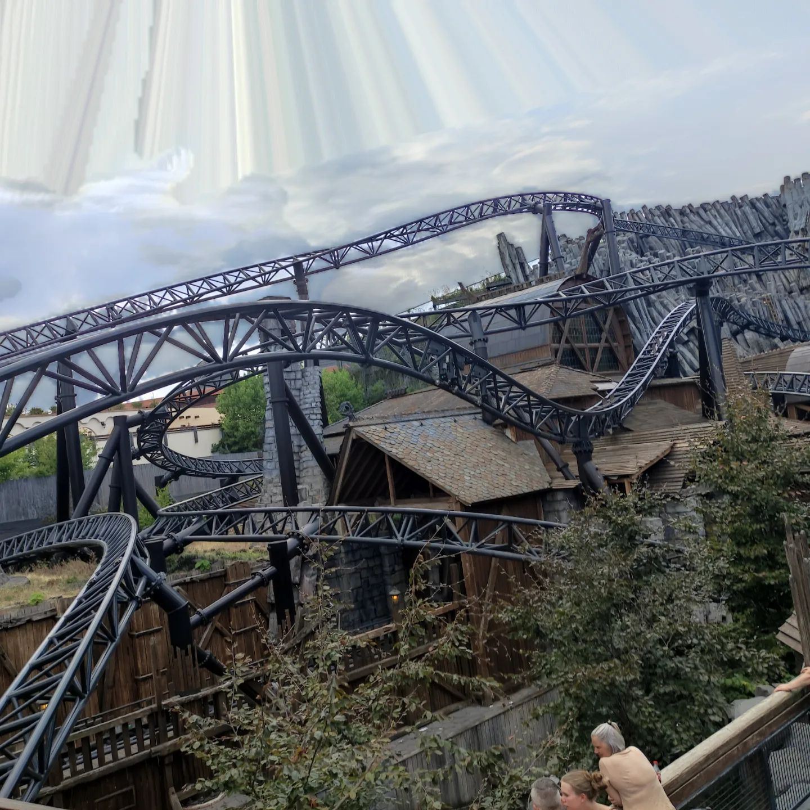

I chose to write about theme parks because I am a big theme park nerd and always interested in what goes on behind the scenes of rides.
One of the most important things in theme parks for me is the theming of the park because this makes a lot of difference for the guest experience.
for example if you look at the difference between a park like phantasialand germany and walibi holland in my opinion phantasialand will always win because while they both offer thrill rides the experience in phantasialand is way better due to extensive theming in the park
The theming is ofcourse not everything the rides themself are also important
In my opinion a park needs a good balance between calmer rides and full thrill rides in my ideal park all of these rides are also fully themed to either one specific theme like you could see in parc asterix in france or themed to the specific part of the park like in the efteling
Theme parks have to do with culture because when a theme park gets big (like the Efteling) it becomes sort of like a countries trademark.